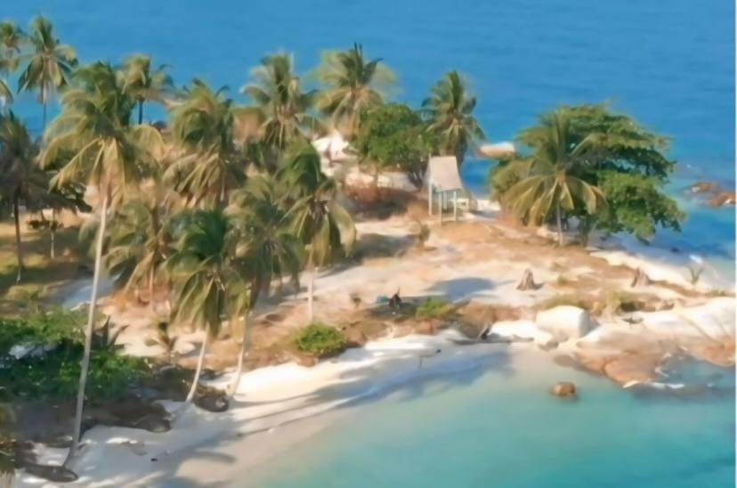

Jembatan Gentala Arasy, Jambi Timur
Menelusuri Pesona Jembatan Gentala Arasy dibangun sebagai simbol modernisasi dan penghubung antara dua sisi sungai Batanghari.
Dengan perencanaan yang dimulai pada awal tahun 2010 dan resmi dibuka untuk umum pada tahun 2015.
Jembatan ini dirancang dengan arsitektur yang unik, menggabungkan elemen tradisional dan modern. Sehingga menciptakan daya tarik tersendiri bagi masyarakat dan pengunjung.
Pembangunan jembatan ini tidak hanya bertujuan untuk meningkatkan konektivitas antar wilayah. Tetapi juga sebagai upaya untuk mempercantik landscape kota Jambi.
Baca Selengkapnya
Taman Wisata Jambi Paradise, Muaro Jambi
Taman Wisata Jambi Paradise adalah salah satu destinasi wisata yang sedang naik daun di Provinsi Jambi.
Terletak di kawasan yang asri dan jauh dari hiruk pikuk kota, taman wisata ini menawarkan pengalaman liburan yang menyenangkan dengan berbagai atraksi menarik bagi pengunjung dari berbagai kalangan, baik keluarga, pasangan, hingga kelompok wisatawan.
Dengan berbagai fasilitas, wahana, dan pemandangan alam yang memukau, Jambi Paradise menjadi pilihan tepat bagi Anda yang ingin menikmati liburan yang menyegarkan dan penuh keseruan.
Baca Selengkapnya
Taman Anggrek Sri Sudewi, Telanaipura
Taman Anggrek Sri Sudewi adalah destinasi wisata hortikultura di Jambi yang menjadi pusat konservasi sekaligus budidaya beragam jenis anggrek, baik spesies lokal maupun hibrida, sehingga menawarkan pengalaman edukatif dan rekreatif di tengah suasana asri dan teduh.
Selain menjadi tempat belajar budidaya anggrek, taman ini juga menghadirkan keindahan koleksi anggrek langka yang memikat, menjadikannya lokasi favorit untuk wisata keluarga, pecinta tanaman, dan fotografer berkat pemandangannya yang cantik dan estetik, sekaligus memperkuat peran taman sebagai ikon wisata berbasis lingkungan di daerahnya.
Baca Selengkapnya
World Of Water Waterpark, Muaro Jambi
World Of Water Waterpark Jambi adalah salah satu destinasi rekreasi populer di Kota Jambi yang menawarkan pengalaman bermain air seru untuk seluruh keluarga.
Dengan berbagai wahana menarik seperti kolam ombak, seluncuran air, lazy river, dan area khusus anak-anak, waterpark ini menghadirkan suasana liburan yang menyenangkan dan segar.
Selain fasilitasnya yang lengkap, area waterpark juga didesain estetik dan asri, dihiasi banyak pepohonan dan taman sehingga membuat pengunjung nyaman berlama-lama.
World Of Water Waterpark juga dilengkapi berbagai fasilitas pendukung seperti restoran, gazebo untuk beristirahat, hingga area parkir luas, menjadikannya destinasi wisata air yang nyaman dan ramah untuk semua umur.
Baca Selengkapnya
Tugu Juang Jambi, Telainapura
Tugu Juang Jambi adalah salah satu monumen bersejarah yang menjadi ikon perjuangan masyarakat Jambi dalam merebut dan mempertahankan kemerdekaan.
Terletak di pusat kota, Tugu Juang didirikan untuk mengenang jasa para pahlawan yang berjuang melawan penjajahan, sekaligus menjadi simbol semangat patriotisme dan nasionalisme warga setempat.
Dengan desain monumen yang megah dan artistik, Tugu Juang kerap dikunjungi oleh wisatawan dan warga untuk berfoto maupun mengenang sejarah, terutama saat peringatan hari-hari besar nasional.
Selain sebagai pengingat perjuangan, area di sekitar Tugu Juang sering menjadi ruang terbuka untuk kegiatan masyarakat dan acara budaya, sehingga membuatnya menjadi salah satu landmark penting dan bernilai historis di Kota Jambi.
Baca Selengkapnya
Candi Tinggi, Muaro Jambi
Candi Tinggi Jambi merupakan salah satu candi bersejarah di kawasan Candi Muaro Jambi, kompleks percandian terbesar di Asia Tenggara yang terletak di Kabupaten Muaro Jambi, Provinsi Jambi.
Candi Tinggi merupakan peninggalan peradaban Hindu-Buddha dari sekitar abad ke-7 hingga ke-13 Masehi, dan hingga kini menjadi salah satu destinasi wisata budaya dan arkeologi yang penting.
Candi ini memiliki bentuk menyerupai teras berundak dari bata merah dan sering dikunjungi wisatawan untuk mempelajari sejarah kejayaan Kerajaan Melayu Kuno.
Selain menawarkan keindahan arsitektur kuno, kawasan Candi Tinggi juga dikelilingi lingkungan hijau dan sungai Batanghari, menciptakan suasana tenang dan asri, sehingga menjadikannya lokasi menarik untuk berwisata sekaligus mengenal kekayaan sejarah Nusantara.
Baca Selengkapnya
Candi Gumpung, Muaro Jambi
Candi Gumpung adalah salah satu candi utama dalam kompleks percandian Muaro Jambi, yang terletak di Kabupaten Muaro Jambi, Provinsi Jambi.
Candi ini diperkirakan dibangun antara abad ke-7 hingga ke-13 Masehi dan merupakan salah satu peninggalan penting peradaban Hindu-Buddha di Sumatra.
Candi Gumpung memiliki struktur bangunan utama berbentuk persegi panjang dan terbuat dari bata merah, dilengkapi anak tangga menuju bagian atasnya. Selain sebagai pusat keagamaan dan pembelajaran kuno, kompleks Candi Gumpung dikelilingi lingkungan yang asri dan tenang, membuatnya menarik untuk dikunjungi sebagai destinasi wisata sejarah dan budaya.
Keberadaan candi ini mencerminkan kejayaan dan peran strategis kawasan Muaro Jambi sebagai pusat pendidikan dan peribadatan di Nusantara pada masanya.
Baca Selengkapnya
Menara Gentala Arasy, Pelayangan
Menara Gentala Arasy adalah salah satu ikon wisata dan religi di Kota Jambi, terletak di tepi Sungai Batanghari dan dihubungkan langsung dengan jembatan pedestrian bernama Gentala Arasy.
Menara setinggi 80 meter ini dilengkapi jam besar di bagian atasnya dan berfungsi sebagai museum sejarah perjuangan masyarakat Jambi, sekaligus pusat edukasi budaya Islam di daerah tersebut.
Selain sebagai monumen sejarah, Menara Gentala Arasy menawarkan pemandangan indah Sungai Batanghari dan kawasan sekitarnya, terutama saat matahari terbenam.
Dengan desain arsitektur bercorak Melayu dan suasana sejuk di sepanjang jalur jembatan, kawasan ini menjadi destinasi wisata favorit warga dan wisatawan untuk berfoto, bersantai, maupun mengenal lebih dalam sejarah dan kebudayaan Jambi.
Baca Selengkapnya
Museum Sigenjei, Telanaipura
Museum Siginjei adalah museum provinsi yang terletak di Kota Jambi dan menjadi pusat pelestarian sejarah, seni, dan budaya daerah.
Museum ini menyimpan beragam koleksi benda-benda bersejarah dan arkeologis, seperti peralatan tradisional, senjata, pakaian adat, numismatik, hingga benda peninggalan bercorak Hindu-Buddha dan Islam.
Selain memperkenalkan kekayaan budaya Jambi kepada wisatawan dan generasi muda, Museum Siginjei juga berfungsi sebagai ruang edukasi dan riset sejarah lokal.
Dengan suasana museum yang tertata dan informatif, Museum Siginjei menjadi destinasi wisata edukatif yang menarik untuk lebih mengenal perjalanan sejarah dan budaya Provinsi Jambi.
Baca Selengkapnya
Taman Nasional Bukit Duabelas, Batang Hari
Taman Nasional Bukit Duabelas adalah kawasan konservasi hutan hujan tropis dataran rendah di Provinsi Jambi, Sumatra, yang dikenal sebagai habitat keanekaragaman hayati dan tempat hidup Orang Rimba (Suku Anak Dalam).
Dengan luas sekitar 60.500 hektar, taman nasional ini menawarkan panorama hutan lebat, sungai jernih, serta aneka flora dan fauna langka, seperti harimau sumatra, beruang madu, dan burung rangkong.
Selain keindahan alamnya, Bukit Duabelas juga memiliki nilai budaya dan sosial yang sangat penting, karena menjadi ruang hidup tradisional dan sumber penghidupan masyarakat adat.
Dengan potensi ekowisata dan kekayaan ekologisnya, Taman Nasional Bukit Duabelas berperan sebagai pusat konservasi sekaligus destinasi wisata alam dan budaya yang mengagumkan di Jambi.
Baca Selengkapnya
Pulau Berhala, Tanjung Jabung Timur

Pulau Berhala adalah pulau kecil eksotis yang terletak di perairan Kabupaten Tanjung Jabung Timur, Provinsi Jambi.
Pulau ini menawarkan keindahan pantai berpasir putih, air laut jernih bergradasi biru dan hijau toska, serta terumbu karang yang masih alami, sehingga menjadi destinasi favorit untuk snorkeling, memancing, dan bersantai.
Selain keindahan alamnya, Pulau Berhala juga memiliki nilai sejarah dan budaya, seperti makam Datuk Paduko Berhalo dan cerita rakyat setempat.
Suasana pulau yang tenang, dikelilingi pohon kelapa dan bebatuan granit, membuatnya sangat cocok untuk wisatawan yang ingin menikmati wisata bahari sekaligus mengenal kearifan lokal dan sejarah kawasan pesisir Jambi.
Baca Selengkapnya
Air Terjun Sigerincing, Lembah Masurai
Air Terjun Sigerincing adalah destinasi wisata alam yang memukau di Kabupaten Merangin, Provinsi Jambi.
Dengan ketinggian sekitar 60 meter, air terjun ini menawarkan panorama menawan berupa aliran air deras yang jatuh di antara tebing batu dan pepohonan hijau, menciptakan suasana segar dan alami.
Selain keindahan pemandangannya, udara di sekitar Air Terjun Sigerincing terasa sejuk dan menenangkan, menjadikannya tempat ideal untuk melepas penat dan menikmati keasrian alam.
Lokasi yang cukup terpencil dan jalur trekking menuju air terjun menambah kesan petualangan, sehingga Air Terjun Sigerincing menjadi salah satu destinasi wisata alam favorit di Jambi bagi para pencinta alam dan fotografi.
Baca Selengkapnya